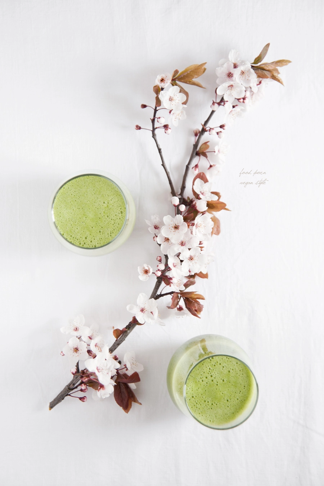
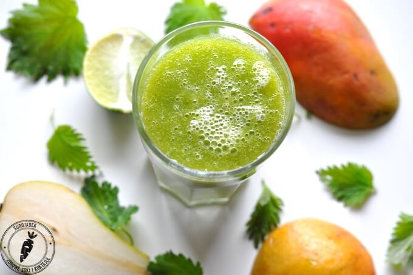

16.05.2016
4 min.

Dla początkujących szpinak, dla bardziej zaawansowanych pokrzywa. Nie trzeba zakasywać rękawów – wystarczy kilka celnych rzutów do blendera i zielone smoothie, pełne mocy, gotowe! Z najpiękniejszych blogów kulinarnych zebraliśmy 15 przepisów na pyszne i zdrowe koktajle. Zielona mocy chlorofilu, przybywaj!
Na początek głęboka zieleń zmiksowanego szpinaku, spiruliny i kopru włoskiego. Gratka dla fanów kwaśnych smaków, bo koktajl miksujemy na bazie wyciśniętych pomarańczy i grejpfrutów. Po przepis sięgnijcie na bloga Smaki Alzacji.

Źródło: www.smakialzacji.blogspot.com
Czas na klasyk, który budzi lepiej niż poranna kawa. Na koktajl składają się tylko cztery składniki – więc nie ma wymówek. Przepis znajdziecie u Olgi z bloga Waniliowa Chmurka.
Źródło: www.waniliowachmurka.blogspot.com
Niewiele zielonych koktajli powstaje na bazie mleka roślinnego – tym bardziej warto spróbować dwukolorowej propozycji z bloga Green Cookies. Wzbogacona o nasiona chia zapewni sporą dawkę kwasów omega-3 i wapnia.
Źródło: www.greencookies.pl
Na blogu Mniu Mniu – Kuchnia Roślinna znajdziecie kolejną mleczną propozycję. Wybieramy ulubione mleko roślinne i miksujemy. Fani milkshake’ów będą zadowoleni.
Źródło: www.mniumniu.com
Pora do zielonego koktajlu dorzucić awokado. Znajdziecie je w przepisie z bloga Addicted to Passion. Taka propozycja doskonale sprawdzi się w porze małego głodu.
Zobacz także: 18 przepisów z awokado
Źródło: www.addicted-to-passion.com
Słyszeliście o trawie pszenicznej? Warto poznać ten superfood, bo to idealny dodatek do koktajli. Zmiksujecie go w parze z selerem naciowym, ale to nie wszystko. Po przepis zajrzyjcie do Agaty z bloga Food Porn Vegan Style.

Źródło: www.foodpornveganstyle.blogspot.com
Czas na koktajle, w których pierwsze skrzypce gra jarmuż. Propozycja z bloga W kuchni Wieczorem to cała paleta zieleni – od ogórkowej po gruszkową.
Źródło: www.wkuchniwieczorem.pl
Jeśli dotąd nie zaprzyjaźniliście się ze spiruliną, czas najwyższy to zmienić. Koktajl z bloga Pretty Baked powinien was do tego skutecznie zachęcić.
Źródło: www.prettybaked.pl
Chętni na dalsze zielone eksperymenty? Jarmuż łączymy z herbatą matcha i limonką. Orzeźwienie gwarantowane! Co i jak miksować – sprawdźcie na blogu Pomysłowe Pieczenie.
Źródło: www.pomyslowepieczenie.blogspot.com
Jarmuż lubi się nie tylko z mango, ale również z melonem. W takim połączeniu można go spróbować w koktajlu z bloga Kuchnia wegAnki.
Źródło: www.weganka.com
Maj to świetny moment na zbiory młodej pokrzywy. Na blogu Surojadek dowiecie się, w czym jest lepsza od szpinaku i z czym warto ją zmiksować.

Źródło: www.surojadek.com
Lubicie orzechowy smak rukoli? Bez względu na odpowiedź dajcie jej szansę w oczyszczającym koktajlu. Po przepis sięgnijcie na bloga Bazyliowy Mus.
Źródło: www.bazyliowymus.blogspot.com
Pozostając w klimatach smaków lekko ostrawych, proponujemy eksperyment z miksowaniem rzeżuchy. Na blogu Dorota Smakuje znajdziecie przepis i patent na to, by koktajl z rzeżuchą zaskoczył słodkim smakiem.
Źródło: www.smakuje.blox.pl
Ten gęsty koktajl z pewnością przypadnie wam do gustu. Młody jęczmień to hit wśród superfoods – przekonajcie się sami. Przepisu szukajcie na blogu Readeat.
Źródło: www.readeat.pl
Propozycja Eryka z bloga erVegan na pewno sprawdzi się w upalne dni. Ten orzeźwiający napój na bazie ogórków gruntowych może stać się hitem waszego lata.
Źródło: www.ervegan.com